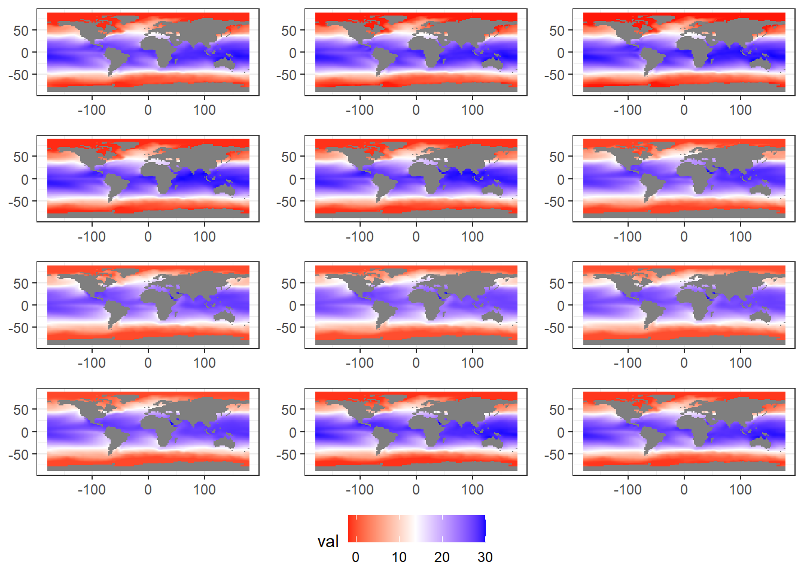

3 EDA SST
We explore the sea surface temperature data set, used in the paper by Ciemer et al (Ciemer et al. (2020)). ERSST (Extended Reconstructed Sea Surface Temperature, Huang et al. (2017)) is a reanalysis from observed data given in the International Comprehensive Ocean-Athmosphere Data Set (ICOADS). Which contains observations from 1800/01 until 2016/12, made by ships and buoys for example. The data comes on a 2x2 degree grid, where data was missing interpolation techniques were used. See paper for reference. the file contains two variables that are measured across different dimensions. The two variables contain the sea surface temperatures and the respective SST anomalies (with respect to the 1971-2000 monthly climatology).

3.3 SD at each location
Figure 3.1: SST standard deviation at each location. The standard deviation was computed over the whole time period

Figure 3.2: Density of standard deviations, standard deviations were computed for each location over the whole time period
3.5 Trend at each location
 ## Means per month TEST
## Means per month TEST
 We see spatial patterns of the mean evolving over time. For example: From May until August there is a spatial separation in two parts that dissolves in september. As expected there is a large seasonal component regarding the means.